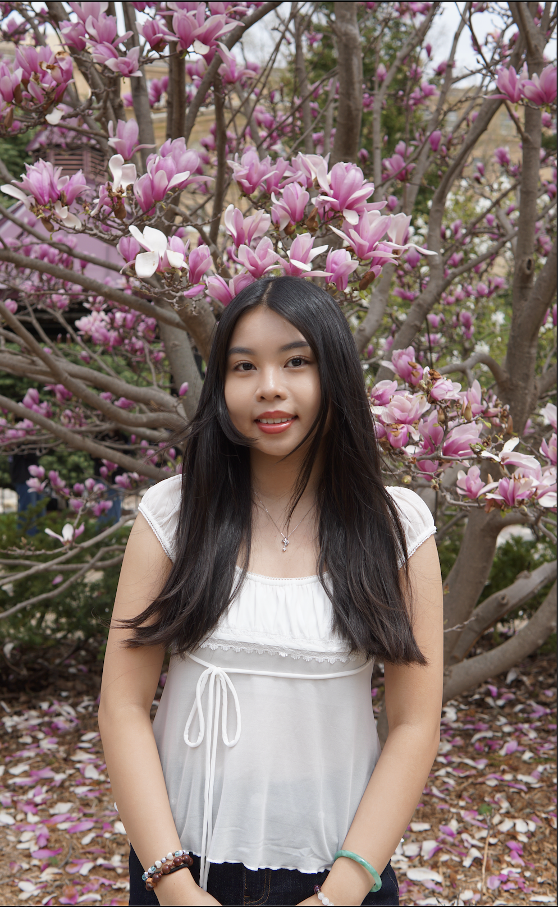

About Me
I'm Eva, a dream digital designer
I believe that every great design starts with a dream. My mission is to turn those dreams into beautiful, functional digital experiences that create meaningful connections.

About Me
I'm an undergraduate double majoring in Information Science and Graphic Design with a certificate in Digital Studies at the University of Wisconsin-Madison. My expected graduation date is May 2027. With my experience in Information Science and Graphic Design, I'm passionate about applying this unique lens to create digital experiences that are visually compelling.
I strive to create digital mediums that blend aesthetics with functional designs. My work is characterized by cohesive designs, smooth animations, and thoughtful user interactions.
Fun Facts About Me
- I love all foods! Especially steak, spring rolls, bánh canh and nigiri.
- My favorite colors are sage green and pastel pink.
- I collect blindboxes like Labubus, Baby Threes, Nommis and Smiskis.
- Can't live without my matcha lattes.
My Design Skills
UX/UI Design
I turn user problems into intuitive experiences.
I combine user research, visual design, and Figma to create intuitive web and app experiences. From FlamAid and Nudge, I design wireframes, mockups, and prototypes focused on usability and accessibility.
Web Design
I turn ideas into interactive experiences.
From building my sorority's website to redesigning FlamAid's digital presence, I combine visual design with HTML, CSS, JavaScript, and UX principles to create websites that are both expressive and easy to use.
Graphic Design
Visuals that communicate before you say a word.
With five graphic-design roles over the past three years, I've created everything from event graphics and campaigns to slide decks, branding systems, and digital assets using Canva, Adobe Creative Cloud, and Figma.
Digital Art
Where experimentation becomes illustration.
I create portraits, characters, and digital illustrations using IbisPaint X, combining creative experimentation with a strong understanding of composition, color, and visual storytelling.